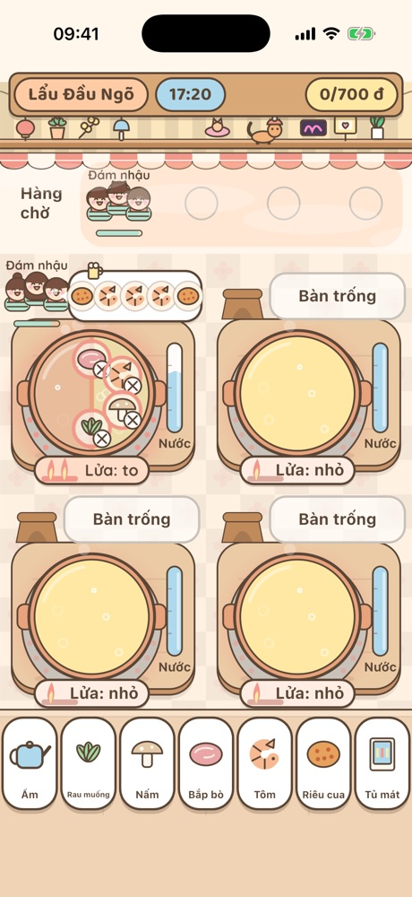
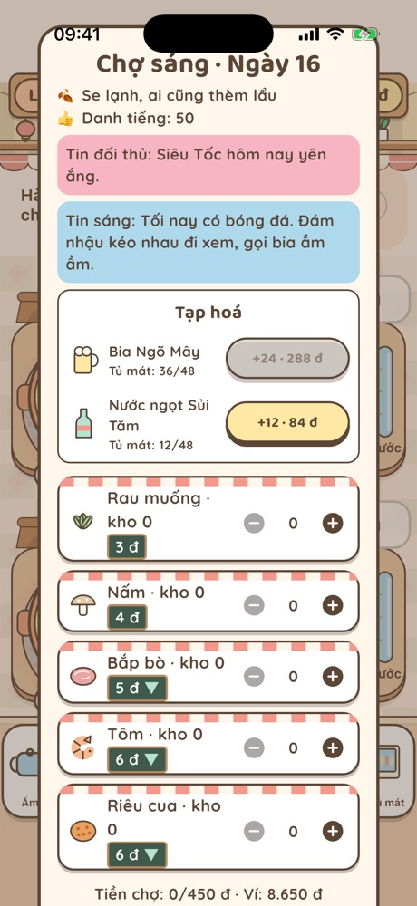

Ngày đầu tiên đã có ngón tay chỉ từng thao tác. Trang này gom lại để bạn xem lúc cần. Trong game, bấm nút ? ở menu cũng ra đúng nội dung này. Day one already shows a finger pointing at each move. This page puts it all in one place. In the game, the ? button on the menu shows the same guide.
Mỗi ngày quán mở khoảng 3 phút. Kiếm đủ số tiền mục tiêu trên thanh trên cùng là được 1 sao, gấp rưỡi được 2 sao, gấp đôi được 3 sao. Có ít nhất 1 sao mới qua ngày. Hết giờ, khách đang ngồi vẫn được phục vụ nốt. Each day the shop is open for about 3 minutes. Earn the target shown at the top for 1 star, one and a half times for 2 stars, double for 3 stars. You need at least 1 star to pass the day. When time runs out, seated customers still get served.
Chạm khách đang chờ ở cửa, rồi chạm một bàn trống. Khách chờ lâu quá sẽ bỏ về. Nhãn trên đầu cho biết kiểu khách: Vội ít kiên nhẫn nhưng tip cao, Đám nhậu gọi nhiều, Du khách thích món đặc trưng. Tap a customer waiting at the door, then tap an empty table. Customers who wait too long walk out. The tag above their head tells you who they are: Hurried guests are impatient but tip well, Party groups order a lot, Tourists love signature dishes.
Kéo món từ quầy vào nồi của bàn. Vòng quanh món cho biết độ chín. Chín tới thì chạm để vớt: đủ tiền và có tip. Sống thì không tính tiền, nhừ chỉ còn nửa giá. Drag food from the counter into the table's pot. The ring around it shows how done it is. Tap to scoop when perfectly cooked: full price plus a tip. Raw pays nothing, mushy pays half.

Chạm nút lửa để đổi tắt, nhỏ, to. Lửa to chín nhanh nhưng nước cạn nhanh. Nồi cạn thì kéo ấm nước vào nồi để châm. Bếp than đổi lửa chậm hơn bếp từ. Tap the flame button to switch off, low, high. High heat cooks faster but the broth boils away faster. When a pot runs low, drag the kettle onto it. Coal stoves change heat more slowly than induction.
Khách có tên (chú Thắng, cô Hạnh, Nhóm Đậu…) có món tủ. Nấu đúng món tủ thì thêm tim; đủ tim họ kể chuyện cũ và trả trang công thức của bà. Vài món hợp nhau thành combo, được thưởng thêm. Xem hết trong Sổ tay. Named customers (Uncle Thắng, Ms. Hạnh, the Bean Crew…) have a favorite dish. Cook it and they gain hearts; with enough hearts they share old stories and return Grandma's recipe pages. Some dishes go together as combos for a bonus. See it all in the Notebook.
Từ chương 3, mua nguyên liệu trước khi mở hàng. Đọc tin sáng và dự báo thời tiết: mưa thì vắng, rét thì đông. Món nào hết thì thẻ trên quầy xám đi. Hàng thừa để được sang hôm sau. From chapter 3, buy ingredients before opening. Read the morning news and the forecast: rain means fewer guests, cold means more. When something runs out, its card on the counter turns gray. Leftovers keep until the next day.

Từ chương 2, trước khi mở quán có thẻ 3 việc nhỏ, như phục vụ đủ số khách hay không để món nào nhừ. Bấm Vào ca để bắt đầu; xong việc nào được thưởng việc đó. Từ chương 3, mỗi ngày một món bán giá gấp rưỡi: chợ sáng báo món đó, thẻ món trên quầy có dấu ★. From chapter 2, a card with 3 small tasks shows before you open, like serving enough guests or letting nothing go mushy. Tap Start shift to begin; each task you finish pays a bonus. From chapter 3, one dish a day sells at 1.5× price: the morning market names it, and its card on the counter has a ★.
Dùng tiền kiếm được để thêm bàn, đổi bếp, đổi nồi, trang trí quán. Tiền chỉ kiếm bằng cách chơi; game không bán sức mạnh. Từ chương 2 thuê được nhân viên trực bàn: tự xếp khách và thả món khách gọi, bạn chỉ canh lửa, châm nước, vớt món. Lương trừ cuối mỗi ngày; nhân viên chậm hơn người chơi giỏi, muốn 3 sao thì nên tự làm. Spend what you earn on more tables, better stoves and pots, and decor. Money only comes from playing; the game never sells power. From chapter 2 you can hire floor staff: they seat guests and drop in what guests order, while you mind the heat, top up broth and scoop. Their wage comes out each day; they are slower than a skilled player, so for 3 stars do it yourself.
Từ ngày 21, mỗi sáng chọn chi nhánh An đứng bếp, các quán khác tự chạy nếu có người trông. Bạn sẽ gọi vốn, thuê người, chạy marketing và giành khách với các chuỗi đối thủ. Hồn quán và Quy mô kéo ngược nhau; cùng các lựa chọn trong truyện, chúng quyết định kết thúc. From day 21, each morning pick the branch where An cooks; the others run on their own if someone is in charge. You'll raise money, hire staff, run marketing and fight rival chains for customers. Soul and Scale pull against each other; together with your story choices, they decide the ending.
Mở Ngoại truyện, Thành phố và chương Lẩu nướng. Qua hết 45 ngày thì chơi tự do: ca tối, đơn giao qua app, chuyện ngõ mỗi ngày. Khi chơi tự do, khách về để lại bàn bẩn, chạm bàn để dọn. Muốn tìm kết khác thì vào Sổ tay › Kết thúc › Chơi lại Phần 2. Side stories, Cities and the Grill hotpot chapter open up. Pass all 45 days to unlock free play: evening shifts, app deliveries, daily alley life. In free play, customers leave dirty tables; tap one to clean it. To find another ending, go to Notebook › Endings › Replay Part 2.